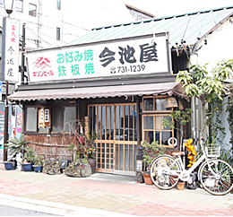
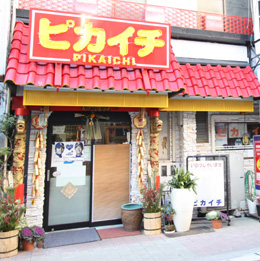
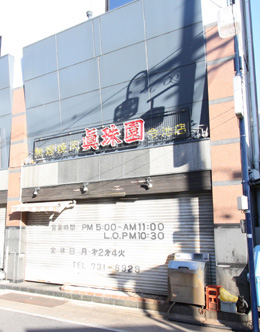
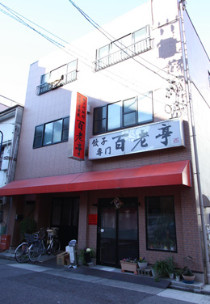
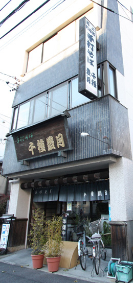
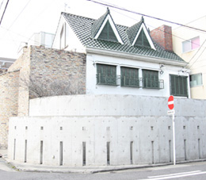
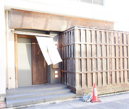

名古屋市千種区を中心に、マンション・土地・新築・中古一戸建など
豊富な不動産物件情報を掲載しています。不動産の査定もお気軽にご相談下さい。


-
古き良き昭和の時代の佇まいが心地よいお好み屋さんです。
素材の味にこだわった、薄目のお好み焼きで、
サッパリした味付けが末永く人気なお店です。
今池屋（お好み焼き）
●TEL 052-731-1239
●愛知県名古屋市千種区今池4丁目12-16
●営業時間／17:00～23:00
●定休日／日祝
-

-
おすすめは何といっても台湾ラーメン。
ピリッと辛口のラーメンを汗を拭いながら食べましょう！
一人で行っても大丈夫なように一人様用カウンターもあります。
味仙（中華）
●TEL 052-733-7670
●愛知県名古屋市千種区今池1-12-10
●営業時間／17:30～1:30（閉店）
●定休日／無休（年末年始除く）
-
芸能人も多く訪れる有名な中華料理店です。
又、地元ドラゴンズのファンも多く利用する店でもあります。
おすすめはピカイチラーメン。
ピリッと辛い味付けの中にもどこか病み付きになる美味しさが魅力です。
ピカイチ（中華）
●TEL 052-731-8413
●名古屋市千種区今池1－14－5
●営業時間／
18：00～2：00（ラストオーダー1：30）
土祝17：30～1：30（ラストオーダー1：00）
●定休日／日曜
-

-
強目の炭火で丁寧に焼き上げられた串は、旨味が凝縮されて美味しさ満点。
オリジナリティ溢れる串料理が楽しめます。
きんぼし（焼き鳥）
●TEL 052-732-5421
●名古屋市千種区今池5-4-9
●営業時間／PM5:30～PM11:00（ラストオーダーPM10:30)
●定休日／年中無休

-
厳選された上質なお肉だけを使ったこだわりの焼肉店だけあって味は申し分ありません！
お店の雰囲気や店員さんの気配りもよく、ちょっと贅沢なデートにもおすすめ。
又、芸能人の利用も多く、業界の間では隠れた名店となっています。
真珠園（焼肉）
●TEL 052-731-8929
●愛知県名古屋市千種区今池1-29-1 今池常磐ビル1F
●営業時間／17:00～23:30
●定休日／月曜・第3火曜
-

-
本場のひつまぶしが味わえる名店です。
焼き加減、味付けは絶妙で、一度食べたら忘れられない味。
それでいて低価格なのも魅力で、メニューの中には「なぞの天ぷら」という、ちょっと変わったメニューもあります。
しら河（うなぎ）
●TEL 052-741-3232
●愛知県名古屋市千種区今池1-8-8 今池ガスビル地下1F
●営業時間／11:00～15:00 17:00～22:00
●定休日／年末年始

-
リーズナブルな価格の割にボリューム満点のメニューが魅力の家庭的な暖かみのあるお好み屋さんです。
人気店ですので、予約が必要です。
ばってん（お好み焼き）
●TEL 052-733-1726
●名古屋市千種区今池3-36-11
●営業時間／
[火～土] 17：30～1：00（ラストオーダー0：00）
[日祝] 12：30～0：00（ラストオーダー23：00）
●定休日／月曜日

-
薄手の皮に小さめのサイズ、カリっとした歯ごたえで、中はとろ～りと美味しい餃子が魅力。
小さめなので20～30個注文しても大丈夫。
一度食べたら忘れられなくなる味です。
百老亭
●TEL 052-731-4462
●愛知県名古屋市千種区今池1-13-12
●営業時間／17：00～21:30ラストオーダー
●定休日／水・第3火曜日
-

-
おすすめは、名物、揚げ天せいろ。
蕎麦はコシがしっかりしていて歯ごたえもよい。
雰囲気の良い店内は1階と2階とあるのですが、満席になる事が多い人気店です。
千種豊月（そば）
●TEL 052-711-3588
●愛知県名古屋市千種区豊年町15-19
●営業時間／11:00～15:00 17:00～20:00(日祝11:00～20:00)
●定休日／水曜日
-

-
お洒落な店内、文句なしに美味しいコーヒー、紅茶お値段は高めですが、大人の雰囲気がとても心地よいおすすめのカフェです。
ケーキの単品メニューも豊富です。
Massimo mariani（マッシモ・マリアーニ／カフェ）
●TEL 052-733-7825
●愛知県名古屋市千種区今池南13-14
●営業時間／2:00～25:00(ラストオーダー24:30)
●定休日／無休
-

-
繊細な味付けの小料理が食べられるこだわりのお店。
上質な料理ばかりでメニューも豊富、接待にも使える大人の雰囲気が魅力のお店です。
割烹かわとみ （割烹）
●TEL 052-732-2052
●愛知県名古屋市千種区内山1-20-22
●営業時間／17:30～22:30(昼は予約のみ営業)
●定休日／日曜日
-

-
ブルコギが有名な韓国料理屋さんです。
辛さは比較的控えめなので、辛い料理が苦手な方でも美味しく頂けます。
値段はとてもリーズナブルで、店内も凄くきれい。
おすすめの韓国料理屋さんです。
百濟（ペクチェ／韓国料理）
●TEL 052-731-9886
●愛知県名古屋市千種区仲田2丁目19-16
●営業時間／
[月～土] 11:30～14:00 17:00～翌1:00
[日・祝] 11:30～14:00 17:00～24:00
●定休日／無休